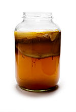
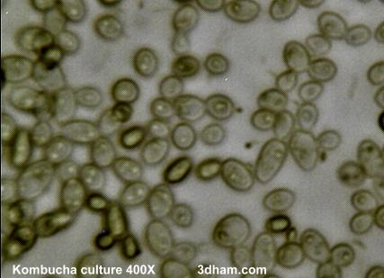

Kombucha tea is made by adding the colony (made up of bacteria and yeast) to sugar and black or green tea and allowing the mix to ferment. The resulting liquid contains vinegar, B vitamins and a number of other chemical compounds. Kombucha tea is commonly prepared by taking a starter sample from an existing culture and growing a new colony in a fresh jar. Health benefits attributed to Kombucha tea include stimulating the immune system, preventing cancer, and improving digestion and liver function.

Made May 21, 2010